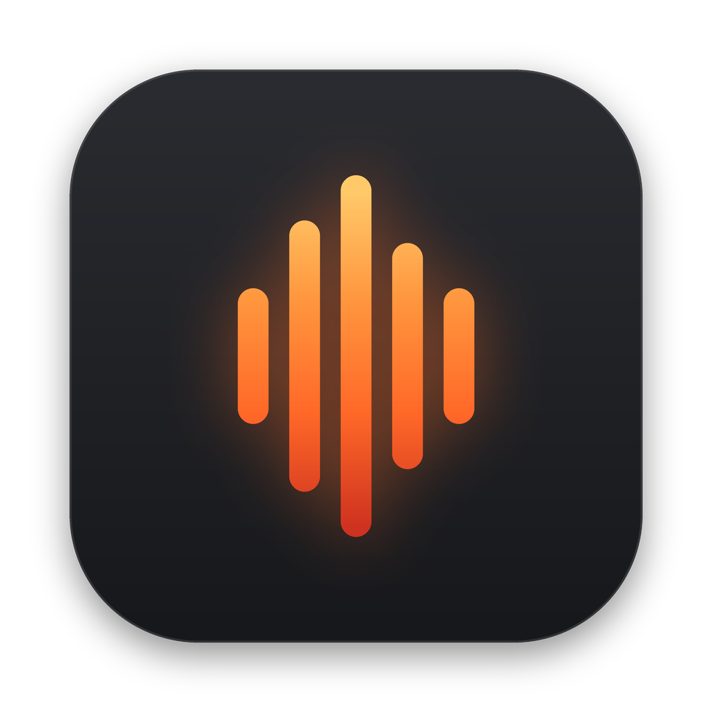
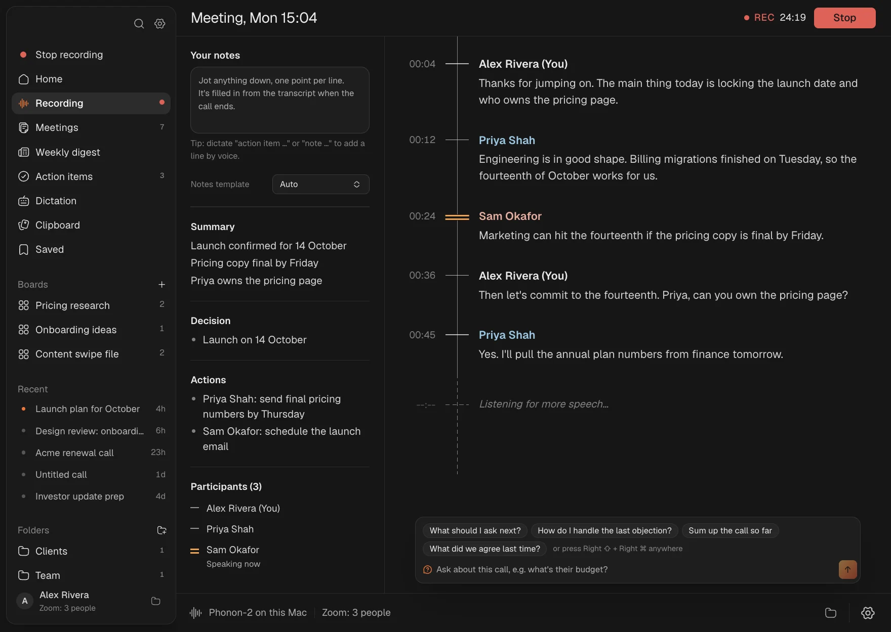
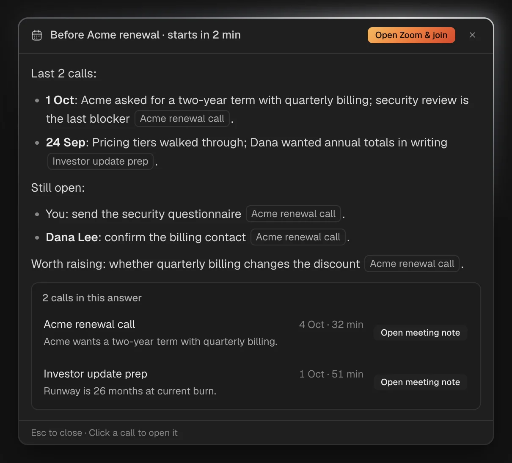
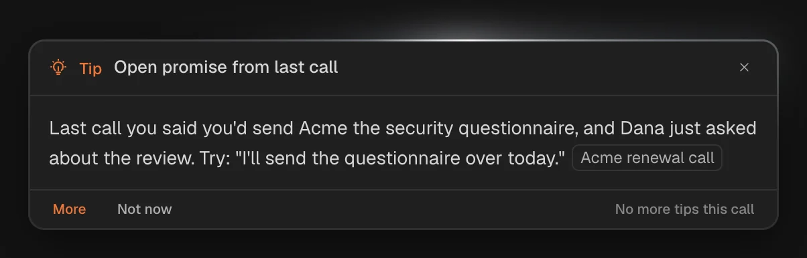
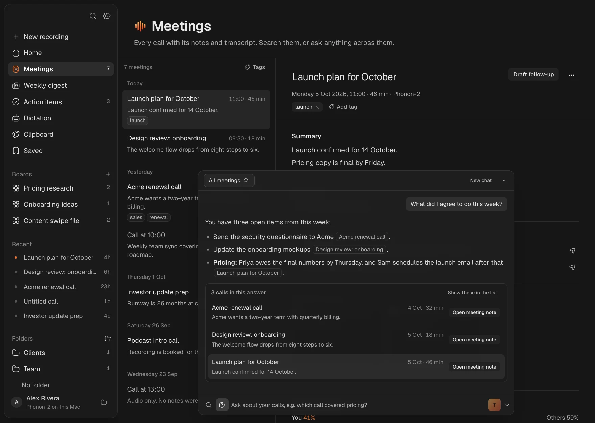
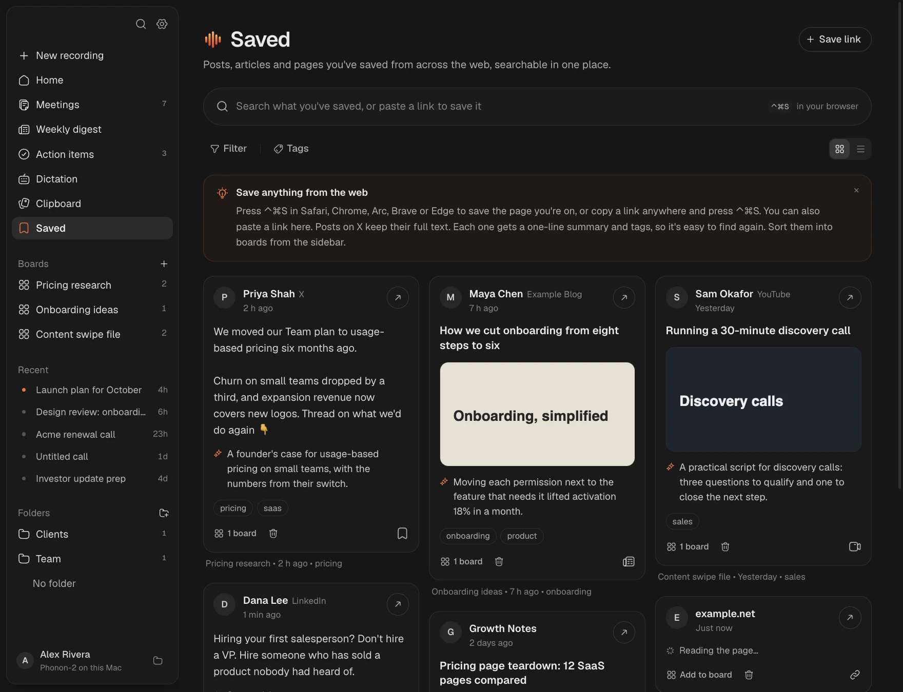

Your calls
Any call in Zoom, Meet, Teams, Slack or FaceTime, recorded and transcribed on your Mac, with live notes, decisions and action items as people talk.

Ember DownloadEmber writes up your calls live, types what you say in any app, and keeps everything you copy and save. All on your Mac, with nothing in the cloud you didn't send there.
Any call in Zoom, Meet, Teams, Slack or FaceTime, recorded and transcribed on your Mac, with live notes, decisions and action items as people talk.
Hold a key and speak, and the words are typed where your cursor is, tidied up for the app you're in. Select text and say how to change it.
Copy text off anything on screen, find everything you've copied, and save posts and pages from the web into boards.
Live notes
Ember hears both sides of the call, tells speakers apart by voice and names the ones it knows. A running summary, decisions and action items with owners build up beside the transcript. Jot your own notes and they're filled in afterwards, or say "action item" with your dictation key.

Help during calls
Ask anything during a call, typed or quietly out loud, and get an answer from the call so far, your playbooks and earlier calls with the same people. Tips appear on their own only when they'd help, as often as you like. Two minutes before a call, a briefing recaps what you last discussed and what's still open.


Ask your meetings
"What did I promise Priya?" Ember answers from your calls and links to the ones it used. Tick off action items, send them to Linear, Notion or Apple Reminders, and draft the follow-up in your own writing style.

Copy and save
Press ⌘⇧2 and drag over anything, a paused video, a slide or a PDF, and the text is copied. ⌃⌘V opens everything you've copied over any app. ⌃⌘S saves the page in your browser to Saved, as a card with a one-line summary and tags, sorted into boards.

Typed where your cursor is, matched to the app: casual in Slack, professional in email, exact in code.
Select text in any app, say "make this shorter", and it's rewritten in place.
Every AI feature on your Mac with Gemma 4. Free, private, no internet.
Or use your OpenRouter key and pick any model. No subscription.
Claude, Claude Code and Cursor can search your calls through a built-in MCP server.
Talk share, pace, filler words and questions for every call, with one tip.
To Linear, Notion or Reminders, by hand or after each call. Ticking closes them there too.
Names it gets wrong, fixed everywhere, with suggestions from your calls.
Notarized, in your Dock and menu bar, and never restarts during a call.
Private by design
Audio, transcripts, notes, voice prints, your clipboard and what you save.
Text for AI goes to the model you choose, or nowhere at all in offline mode.
No sign-up, telemetry or analytics. Free and open source.
Your calls, your voice and everything you save. On your Mac.
Download for Mac